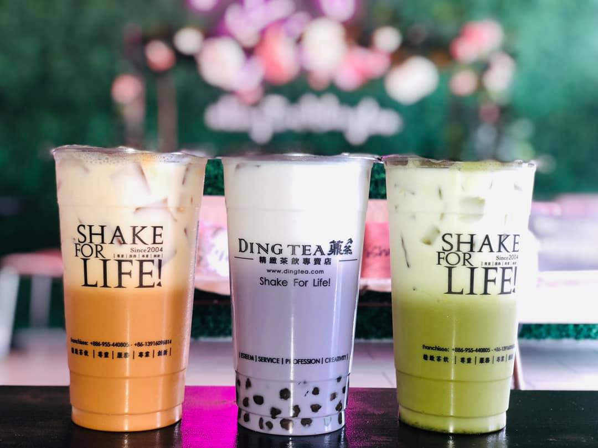
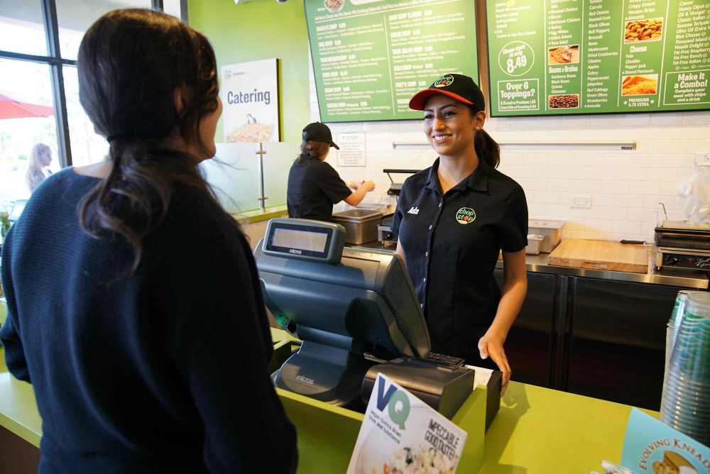
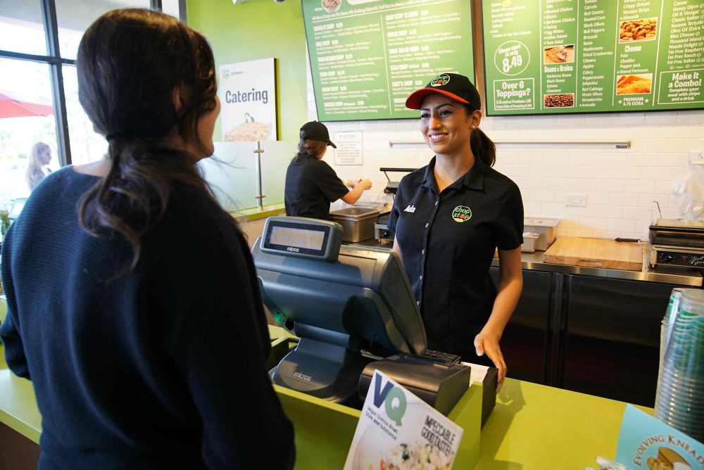

Iris Le
I am currently a 2nd year student at UC Riverside pursuing my bachelor’s degree in political science. I am currently studying in classes specializing in politics in order to grasp the concepts of past political history as well as current in order to help me with my career in the future. After college, I plan to attend law school in order to further my knowledge on the concept then becoming a lawyer specializing in the criminal justice field. My dedication and passion towards this career will assist me in becoming the best criminal justice lawyer that I can be.
Previously in my life, when I was in high school, I was a part of many extra curricular activities such as Key Club, women’s basketball and religious scouts. I also volunteered as a religious education teaching assistant at my church. These extra curricular activities taught me great collaboration skills and how working together can get the job done efficiently. This will aid me in my journey of becoming a lawyer because I would need to collaborate with my peers as well as clients in order to complete the tasks I was assigned to do. Working amongst others has also improved my communication skills and presentation skills since both are essential in the field of being a lawyer to be able to present evidence and statements in court. Aside from all my extracurriculars in high school, I was also working as a cashier and barista. By working, I was able to come across many different people whom I would converse with which improved my communication skills as well as my customer service. This would assist me in the future for when I have clients to speak to. Some essential skills that I have possessed from all of these extra curriculars would be critical reading, writing, listening, and organization.
I have always aspired to become a lawyer because I seek to help others obtain their justice and ensure fairness within the system. My purpose is to aid my clients and enforce the rights according to the Constitution. My priority is to assist individuals who are in need of justice and the protection of their rights. I want to help those who have been wrongfully convicted, those who need to be rightfully sentenced for their crimes, and overall providing the justice that the system desperately needs. My goal has always been to help those who are put in a position where they could not help themselves. It has also been to provide clarity, relief, and justice for the people who deserved to get closure. Living in America, there have been many incidences where justice has not been served and that has made me want to push for change in order to establish a better system. I am looking to change the system for the better one step at a time and I would be able to serve that purpose as a lawyer and help as many people as I can along the way through this journey during my lifetime.
Experience
Cashier & Barista
• Make drinks
• Take orders
• Experience with customer service
Teaching Assistant
• Collaborate with other teaching assistants
• Communite with parents of students in English and Vietnamese
• Help students learn
• TA'd for about 50 students for the past 2 years
Education
UC Riverside
Portfolio



